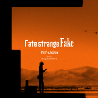
M u s i c
O p e n i n g T h e m e
【 期間生産限定盤 】
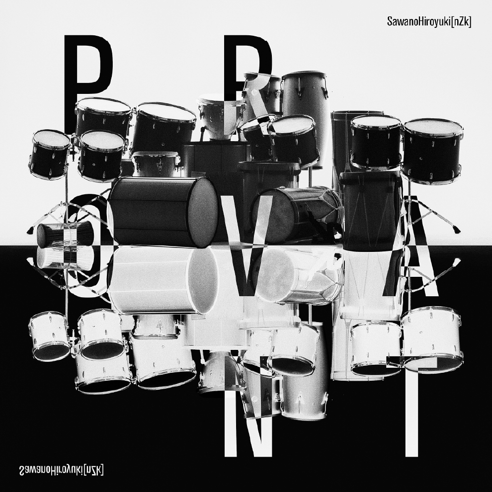
【 通常盤 】
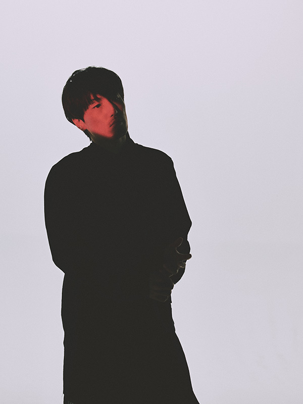
澤野弘之
PROFILE
ドラマ・アニメ・映画など映像の音楽活動、その他にもアーティストへの楽曲提供・編曲など精力的に活動している。ボーカル楽曲に重点を置いたプロジェクト、SawanoHiroyuki[nZk]（サワノヒロユキヌジーク）が2014年春より始動。プロデュースワークとしてはSennaRin（センナリン）とNAQT VANE（ナクトベイン）を手掛ける。
SawanoHiroyuki[nZk] ：
https://www.sh-nzk.net/
澤野弘之 ：
https://www.sawanohiroyuki.com/
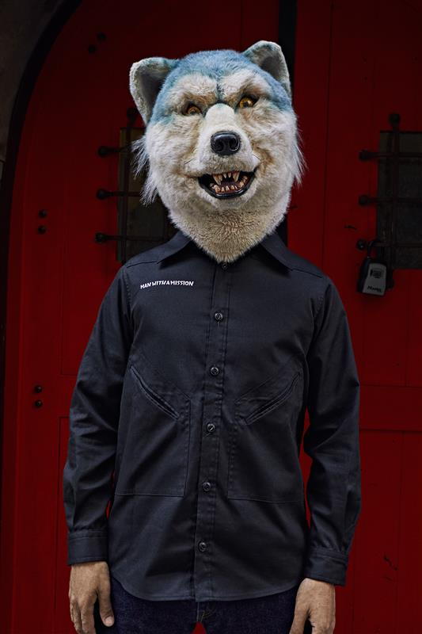
Jean-Ken Johnny
（MAN WITH A MISSION）
PROFILE
頭がオオカミで身体が人間という究極の生命体“5匹”からなるロックバンド、MAN WITH A MISSIONのギター／ヴォーカル／ラップ担当。2010年に突如音楽シーンに登場し以降、破格のライブパフォーマンスで快進撃を続け、多くのテレビCMやアニメ、ドラマ、映画の主題歌を担当。幅広いファン層に支持を広げ、日本国内のみならず全米デビューも果たすなど、世界からも注目を浴びている。その躍進は常に進化し続け、音楽シーンを牽引中。2021年11月と2022年5月にわたりキャリア初の連作アルバム「Break and Cross the Walls Ⅰ」、「Break and Cross the Walls Ⅱ」をリリース。2023年にはシンガーソングライターmiletとのコラボレーション楽曲「絆ノ奇跡 / コイコガレ」で『テレビアニメ「鬼滅の刃」刀鍛冶の里編』主題歌を担当し、スマッシュヒット。2024年には「North America / UK & Europe Tour 2024 “Kizuna no Kiseki” Powered by Cruncyhroll」を実施。国内外問わず精力的にライブ活動を続けており、2025年にバンド結成15周年を迎えた。
MAN WITH A MISSION ：
https://www.mwamjapan.info
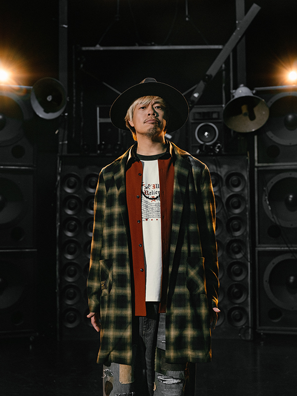
TAKUMA
（10-FEET）
PROFILE
3ピースロックバンド、10-FEETでVocal / Guitarを担当し、作詞作曲も手がける。
地元京都を拠点に活動。
全国ツアーや各地のフェス出演等精力的に活動中。
10-FEET主催の京都大作戦は、毎年チケットの争奪戦が繰り広げられ、アーティスト主催のフェスを代表している。
バンド結成25年以上経た現在もピークを更新し、まだまだ進化中で突っ走っている。
ソロとしての活動では、2018年頃からアコースティック編成でのライブにも力を入れていて「卓真」名義で2021年11月24日に初のソロ音源を配信。映画「軍艦少年」の主題歌にもなっている。また、楽曲提供も行ってきた。
Dragon Ash、東京スカパラダイスオーケストラ、MAN WITH A MISSION、TOTALFAT、SUNSET BUS、Sugar Ray（US）、INSOLENCE（US）、INFINITY16等、国内外幅広いジャンルの楽曲にゲストヴォーカルとして参加もしている。
10-FEET ：
https://10-feet.kyoto/
E n d i n g T h e m e
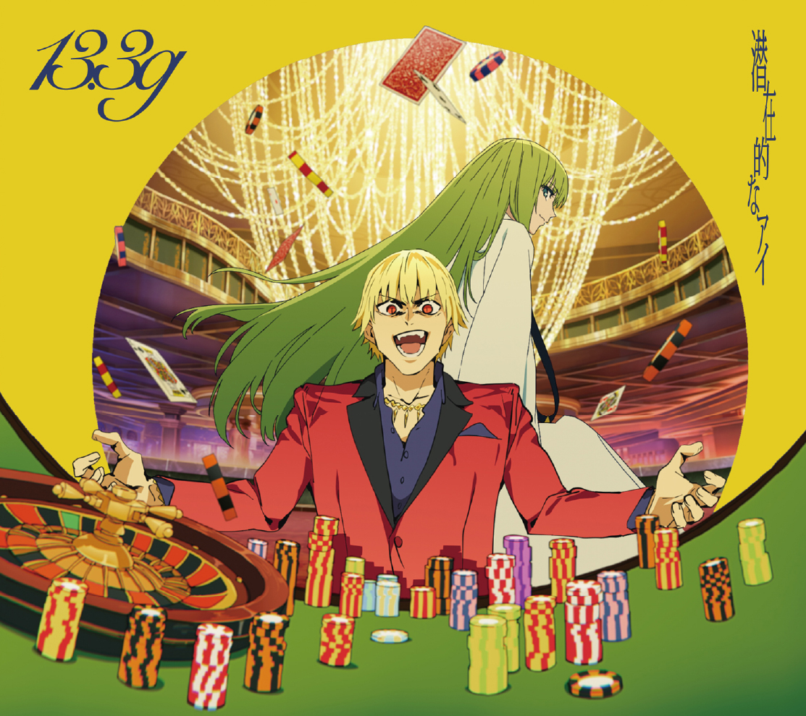
【 期間生産限定盤（CD＋BD）】
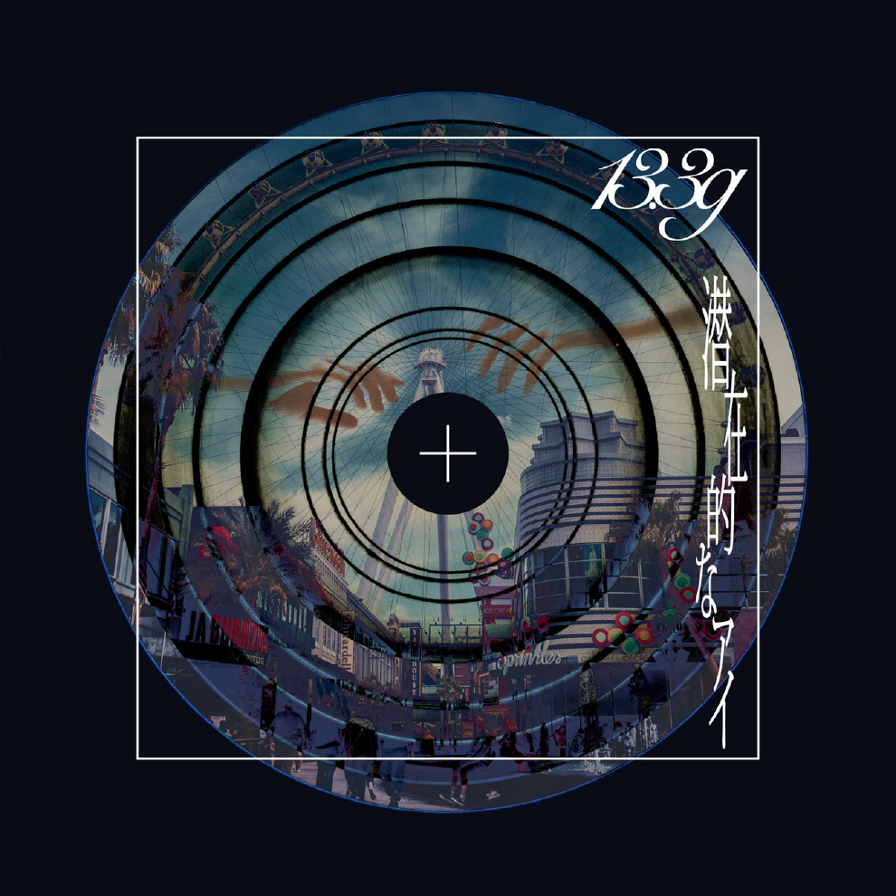
【 完全生産限定版（CD）】
PROFILE
2021年に大阪で結成。ダンスミュージックやファンク、ポップスなど様々な音楽を取り込み藤丸将太（Vo/Gt/Pf）の艶やかで突き抜ける歌声を軸に、グルーヴィーな韻やメロディ、リズムが癖になる中毒性のある楽曲から王道のポップスまで多種多様なサウンドを操る新世代のカメレオンロックバンド。
ライブハウスで磨き上げられたライブバンドとしてのパフォーマンスが話題を呼び、各地のサーキットイベントでは入場規制が続出。ワンマンライブも開催中。
13.3g ：
https://13-3g.com/
S o u n d t r a c k
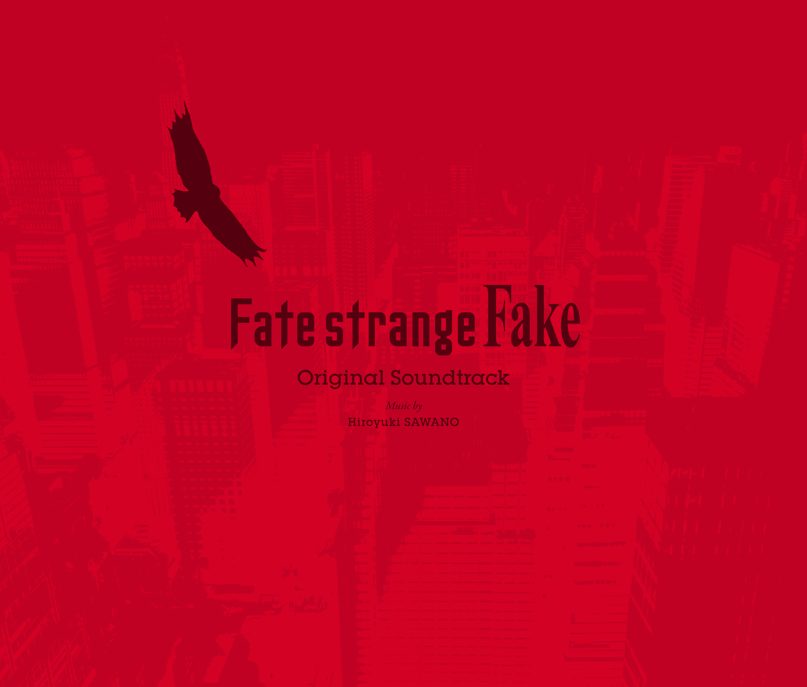
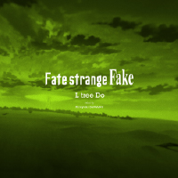
「L tree Do」
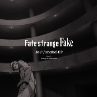
「Je☆ / snakeHIP」
「HitPopDragonHand」
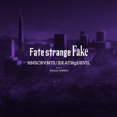
「HNSCRVNTS / DEATHgDEVIL」
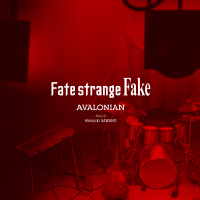
「AVALONIAN」
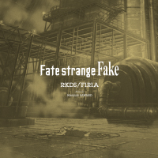
「RKDS / F1R1A」
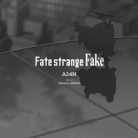
「A34N」
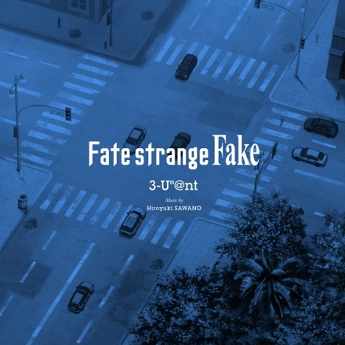
「3-U”＠nt」
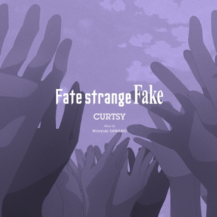
「CURTSY」
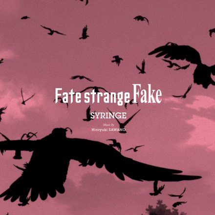
「SYRINGE」
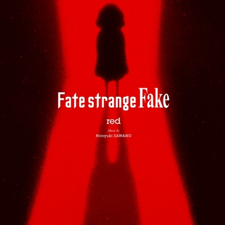
「red」
- W h i s p e r s o f D a w n - T h e m e

『Fate/strange Fake
-Whispers of
Dawn-
Original Soundtrack EP』
アーティスト ： 澤野弘之
配信楽曲 ：
1. STRANGEFAKE
2. gilGAMEsh
3. THE COIL
4. BITE DOWN
※DL配信・ST配信同時実施
※単曲・まとめの配信価格は各配信社の価格設定に準じます。
澤野弘之